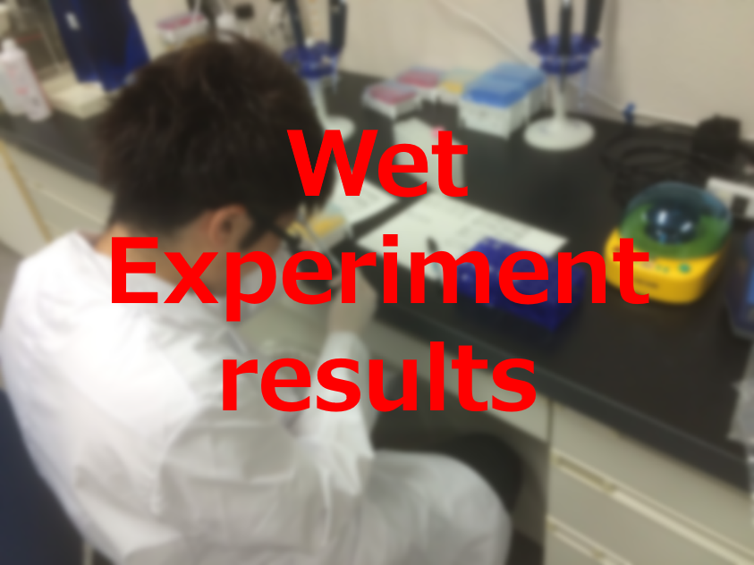

|  |
Dry Experiment
We simulate Output concentration of DNA Conductor by numerical software (Matlab) and describe a performance and a refinement in this page.
Further, Let Threshold concentration be defined as 50nM, where High>50nM, and Low<50nM.
1.Confirmation of DNA Conductor’s Output concentration
When Input1 and Input2 add DNA Conductor, we simulate Output concentration.
We set initial Input concentration at 100nM(High) or 5nM(Low).
Figure1.2 shows DNA Conductor’s Output when Input1-Input2 concentration is High-High, High-Low, Low-High, Low-Low respectively.


 |
 |
 |
 |
2.Introduction of Threshold gate
Through DNA Conductor’s simulation in chapter1, Output concentration proved nearly equal to Input1 + Input2, if Input1-Input2 concentration is Low-Low.
For this reason, connecting DNA Conductors as shown in Figure2.1, Output Concentration gradually increase and will be High despite Input1-Input2 is Low-Low(Figure2.2).
Solving this problem, we attach Threshold gate to DNA Conductor.
Figure2.4 shows Threshold gate working which divide Input concentration High or Low as a border Threshold concentration.
If Input concentration is Low after passing Threshold gate, the concentration will be 0.5nM. For this reason, Output of DNA Conductor which attach Threshold gate will be never high, if Input1-Input2 is Low-Low.


 |
 |
 |
 |
3. Comparison of DNA Conductor with Combinational xor circuit
As shown in Figure3.1, xor circuit can be designed to combine AND gate, OR gate, and NOTgate.

The realization of combinational XOR gate is difficult.
The reason is that complex circuits in DNA reaction system tend to cause the reaction which we don’t hope to cause.
We compare simulation between DNA Interference Detector and combinational XOR to conclude which is simpler design.
Table3.2:Each device of complexity index

Table3.2 shows the design using DNA interference detection is simpler because each number is lower.
Next, we compare simulation.


These graphs are High-Low Output.
Because Low-Low Output’s concentration is less than 10^(-8),
We can recognize Output is low when graph’s value is comparatively low.
So, we set the Threshold as 50nM. Therefore, the design using DNA Conductor is faster than the other in the time when we recognize the Output is High.
Because Threshold is 50nM, from figure2, it is 150 minutes that the difference of time when Output becomes high.
If we use the combinational circuit stopping 150 minutes is likely to be a critical weak point. Our DNA conductor solved the weak point.
Wet Experiment
step.1 Dilute
We diluted the concentration of each strands until they become desired concentration like below table.
This experiment performed at 20℃ in Tris-EDTA buffer supplemented with 12.5mM MgCl2.

We conducted 4 types experiment.
First, (1) Input1 and Input2 are low.
Second, (2) Input1 is high and Input2 is low.
Third,(3) Input1 is low and Input2 is high.
At last, (4) Input1 and Input2 are high.
We show each initial concentration of input for (1), (2), (3) and (4) as below tables.
We set to Input concentration is 100nM when input is high, and 5nM when input is low.


step 2 Annealing
We annealed each DNA in table1 from 95 to 20℃(-1℃/min) after heat at 95℃ for 15 minutes.
step 3 Fluorescence intensity measurements
We measured the fluorescence intensity of output by using Spectrofluoremeter(FP-8300,JASCO)
Measurement time of (1)~(4) is 36000 seconds then time interval is 5 minutes.
Output confirmation
We applied FRET(Fluorescence resonance energy transfer) to confirm how much output is released.
Before the Output reacts to Fluorescence, the FAM doesn’t glow, since fluorescence of FAM is absorbed by BHQ1.
When the Output reacts Fluorescence, fluorescence of FAM glows, since distance of FAM and BHQ1 step away.

figure.3.5
Experimental result
Verification Experiment
Measurement result when we add Verification Input after 30 minutes passes since add Fluorescence and Makeoutput in a cell is shown below.
figure.3.6
We could know that Makeoutput1 and Fluorescence doesn’t react since fluorescence intensity almost unchanged before adding Verification Input.
After adding Verification Input, fluorescence intensity changed.
Therefore, we progressed to the main experiment.
Experiment of XOR
Measurement result of Output when inputs are (1), (2), (3) and (4) are shown below.

figure.3.7 (1) InputA and InputB are low
figure.3.8 (2) InputA is high and InputB is low

figure.3.9 (3) InputA is low and InputB is high

figure.3.10 (4) InputA and InputB are high
Put the data from (1)~(4) together is shown below.
figure.3.11 (1)~(4) together
There is diffrence in fluorescence intensity between pattern2 and pattern4.
confirm that fluorescence intensity of between pattern (4) and (2) are difference.
Therefore, we could obtain desired result. However, there are some problems as below.
Problem 1
The concentration difference when output value is High and is Low in is too small compared simulation result.
Problem 2
We could confirm the output value when (2) and (3) are same from simulation result, but they are different in the experiment result.
Problem 3
The output value is too big when the pattern of experiment is (1)
We considered causes of problems are as below.
Cause of problem1
Due to concentration of each DNA is thin, wherefore concentration difference between High and Low is small.
Cause of problem2 and problem3
Due to noise is arisen when we used spectrofluorometer.
Therefore, we conducted experiment again in improved experiment environment as below.
・We set each DNA except for InputA and InputB twice concentration as much as before experiment in order to increase the concentration difference between High and Low.
・We adjusted sensitivity of spectrofluorometer to reduce influence by noise. In particular, we changed sensitivity from 370V to 270V.